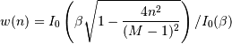
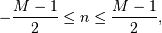
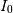

numpy.kaiser¶
- numpy.kaiser(M, beta)[source]¶
Return the Kaiser window.
The Kaiser window is a taper formed by using a Bessel function.
Parameters: M : int
Number of points in the output window. If zero or less, an empty array is returned.
beta : float
Shape parameter for window.
Returns: out : array
The window, with the maximum value normalized to one (the value one appears only if the number of samples is odd).
Notes
The Kaiser window is defined as

with

where  is the modified zeroth-order Bessel function.
The Kaiser was named for Jim Kaiser, who discovered a simple approximation to the DPSS window based on Bessel functions. The Kaiser window is a very good approximation to the Digital Prolate Spheroidal Sequence, or Slepian window, which is the transform which maximizes the energy in the main lobe of the window relative to total energy.
The Kaiser can approximate many other windows by varying the beta parameter.
beta Window shape 0 Rectangular 5 Similar to a Hamming 6 Similar to a Hanning 8.6 Similar to a Blackman A beta value of 14 is probably a good starting point. Note that as beta gets large, the window narrows, and so the number of samples needs to be large enough to sample the increasingly narrow spike, otherwise NaNs will get returned.
Most references to the Kaiser window come from the signal processing literature, where it is used as one of many windowing functions for smoothing values. It is also known as an apodization (which means “removing the foot”, i.e. smoothing discontinuities at the beginning and end of the sampled signal) or tapering function.
References
[R34] J. F. Kaiser, “Digital Filters” - Ch 7 in “Systems analysis by digital computer”, Editors: F.F. Kuo and J.F. Kaiser, p 218-285. John Wiley and Sons, New York, (1966). [R35] E.R. Kanasewich, “Time Sequence Analysis in Geophysics”, The University of Alberta Press, 1975, pp. 177-178. [R36] Wikipedia, “Window function”, http://en.wikipedia.org/wiki/Window_function Examples
>>> np.kaiser(12, 14) array([ 7.72686684e-06, 3.46009194e-03, 4.65200189e-02, 2.29737120e-01, 5.99885316e-01, 9.45674898e-01, 9.45674898e-01, 5.99885316e-01, 2.29737120e-01, 4.65200189e-02, 3.46009194e-03, 7.72686684e-06])
Plot the window and the frequency response:
>>> from numpy.fft import fft, fftshift >>> window = np.kaiser(51, 14) >>> plt.plot(window) [<matplotlib.lines.Line2D object at 0x...>] >>> plt.title("Kaiser window") <matplotlib.text.Text object at 0x...> >>> plt.ylabel("Amplitude") <matplotlib.text.Text object at 0x...> >>> plt.xlabel("Sample") <matplotlib.text.Text object at 0x...> >>> plt.show()
>>> plt.figure() <matplotlib.figure.Figure object at 0x...> >>> A = fft(window, 2048) / 25.5 >>> mag = np.abs(fftshift(A)) >>> freq = np.linspace(-0.5, 0.5, len(A)) >>> response = 20 * np.log10(mag) >>> response = np.clip(response, -100, 100) >>> plt.plot(freq, response) [<matplotlib.lines.Line2D object at 0x...>] >>> plt.title("Frequency response of Kaiser window") <matplotlib.text.Text object at 0x...> >>> plt.ylabel("Magnitude [dB]") <matplotlib.text.Text object at 0x...> >>> plt.xlabel("Normalized frequency [cycles per sample]") <matplotlib.text.Text object at 0x...> >>> plt.axis('tight') (-0.5, 0.5, -100.0, ...) >>> plt.show()